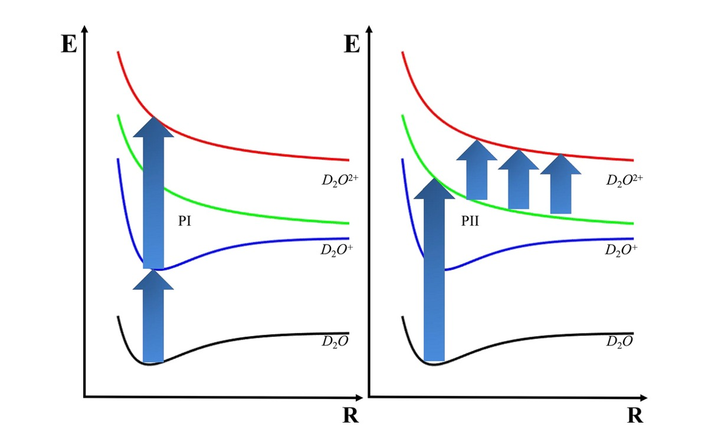
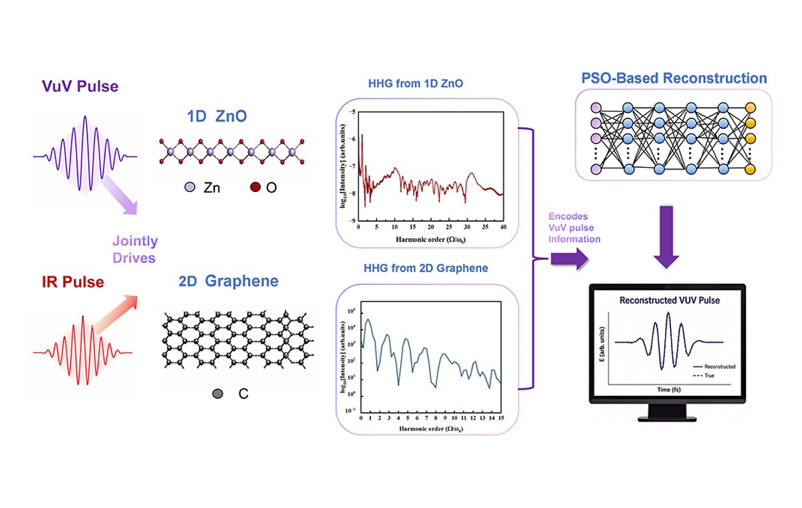
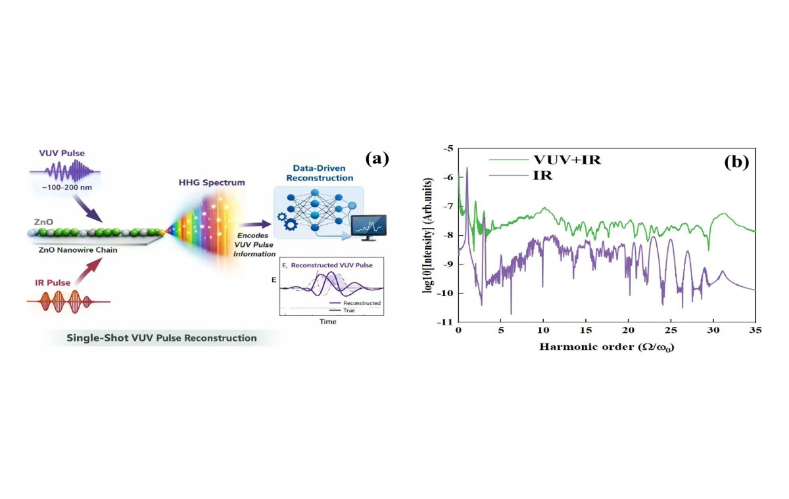
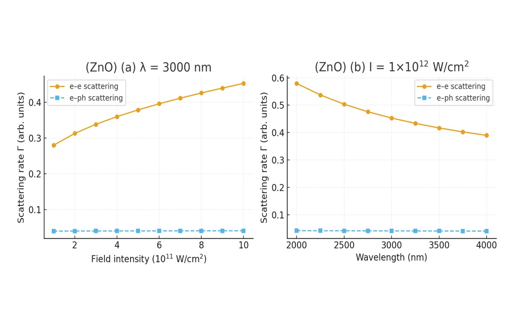

Publications collected from the group resource archive.
Fortran, Matlab, Octopus inputs, TDSE, SBE and SFA workflows.
Papers, derivations, theses, references, tools and internal documents.
Research Directions
Strong-field, attosecond, and computational AMO theory
News
Latest Group Updates
Research
Research Directions
The group connects strong-field physics, attosecond science, high-harmonic spectroscopy, and computational AMO theory through reproducible numerical models.

01Strong-Field AMO Dynamics
Ionization, dissociation, recombination and radiation in intense laser fields, with attention to electron-nuclear coupling and non-vertical channels.

02High-Harmonic Generation
Harmonic spectra, polarization shaping, bound-state transition, trajectory analysis, and attosecond pulse synthesis in atoms, molecules and solids.

03TDSE / SBE / SFA Methods
Time-dependent Schrodinger equation solvers, semiconductor Bloch equations, strong-field approximation, saddle-point models and QTMC tools.

04Solid-State Strong-Field Response
Carrier dynamics, dephasing-time retrieval, complex saddle points, scattering effects and ultrafast material response under crystal-strong laser interaction.
News
Group News
Publication updates are generated from papers in the local group resource archive.
Members
Faculty and Students
Xi Zhao and Jun Wang lead the joint group. Student rosters are structured for later updates.
Faculty
Principal Investigators · 首席研究员
Shaanxi Normal University
Xi Zhao · 赵曦
Associate Researcher, College of Physics and Information Technology
- Discipline
- Atomic and Molecular Physics
- zhaoxi719@snnu.edu.cn
- Education
- Ph.D., Jilin University
Research areas include interaction between strong laser fields and atom/molecule/solid systems, attosecond science, and high-performance computation in science.
Official SNNU ProfileJilin University
Jun Wang · 王俊
Associate Professor, Institute of Atomic and Molecular Physics
- Unit
- Institute of Atomic and Molecular Physics
- Degree
- Ph.D.
- Location
- Changchun, Jilin
Research output includes strong-field molecular dynamics and high-order harmonic generation, with recent collaborations on nonadiabatic ionization-dissociation and ultrafast AMO theory.
Official JLU ProfileStudents
Group Members
博士生
Member list to be updated.
硕士生
Member list to be updated.
本科生
Member list to be updated.
已毕业学生
Alumni list to be updated.
Publications
Selected Publications
Recent papers are read from `ourweb/01_Group_Resource/1.Our Pulished Paper （2024-）`.
2026 · J. Phys. Chem. Lett.
In Silico Single-Shot Vacuum-Ultraviolet Pulse Reconstruction Via Solid-State HHG
A solid-state HHG route for retrieving VUV waveforms through theory-driven reconstruction.
Open local PDF
2025 · Scientific Reports
Non-vertical ionization-dissociation model for D2O2+
Strong infrared-field induced molecular dissociation in a nonadiabatic multi-state model.
Resource Portal
Group Resources
Papers, videos, codes, derivations, theses, references and tools from the group archive.
Video Resources
Lectures and Code Tutorials
Course videos and research tutorials are hosted on the group Bilibili space, including attosecond science, TDSE derivations, HHG saddle-point equations, Octopus usage, and solid-state strong-field theory.
Open Bilibili Space
05-31 · 34:51 · 53 views
Attosecond Entanglement and Coherence
05-31 · 02:33:12 · 27 views
Lec 07 Monolayer MoS2 Hamiltonian
05-31 · 01:40:53 · 21 views
Lec 06 Spin Orbiting Coupling
05-31 · 01:54:39 · 11 views
Lec 08 Spin orbit coupling in Monolayer TMDs
05-31 · 02:07:46 · 20 views
Lec 01 Graphene Band Structure
2025-07-18 · 14:52 · 1205 views
He原子强激光相互作用TDSE讲解2：含时部分
2025-07-18 · 11:37 · 509 views
He原子强激光作用下双电子含时薛定谔方程的讲解1：本征态+dipole计算
2025-07-03 · 02:05 · 294 views
量子光学与hhg产生2
2025-07-03 · 13:12 · 296 views
量子光学与hhg产生1
2025-01-21 · 42:34 · 184 views
固体-强激光相互作用载流子经典轨迹和时频分析
2025-01-20 · 07:55 · 202 views
octopus计算电流教程
2025-01-19 · 12:10 · 194 views
octopus code acceleration-数据处理
2025-01-19 · 14:18 · 383 views
octopus code使用
2025-01-04 · 25:08 · 127 views
强激光与气体相互作用HHG鞍点方程求解
2025-01-04 · 19:52 · 210 views
强激光与固体相互作用HHG鞍点方程求解
2025-01-04 · 19:53 · 396 views
固体高次谐波计算理论讲解
2025-01-04 · 01:06:24 · 370 views
固体高次谐波半导体布洛赫方程程序讲解
2024-07-02 · 49:56 · 384 views
1.阿秒科学三步模型与TDSE的推导